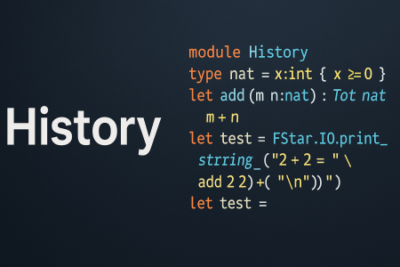

Explore the History of F*
This page provides an overview of F*, from its origins and key milestones to its development over time. Use the links below to explore different aspects of F*’s history and see how it has evolved into the language it is today.
Description History
Description History
Description
F* (F star) is a high level, proof based, dependently typed, general purpose programming language built in collaboration between Microsoft Research and Inria.
History
F* has its origins in Dependent ML, a proposed variant of ML by Hongwei Xi and Frank Pfenning, bringing forward the idea of dependent types.
While Dependent ML eventually was abandoned in favor of ATS, its concepts were brought forth into F7, a new language by Microsoft Research in 2007 used for security.
However the creators of F7 sought to expand it to become its own independent language, in its current form it couldn’t, starting from scratch was necessary.
In 2011, F* was created as the successor to F7, functioning as a true general purpose language.
While Dependent ML eventually was abandoned in favor of ATS, its concepts were brought forth into F7, a new language by Microsoft Research in 2007 used for security.
However the creators of F7 sought to expand it to become its own independent language, in its current form it couldn’t, starting from scratch was necessary.
In 2011, F* was created as the successor to F7, functioning as a true general purpose language.
